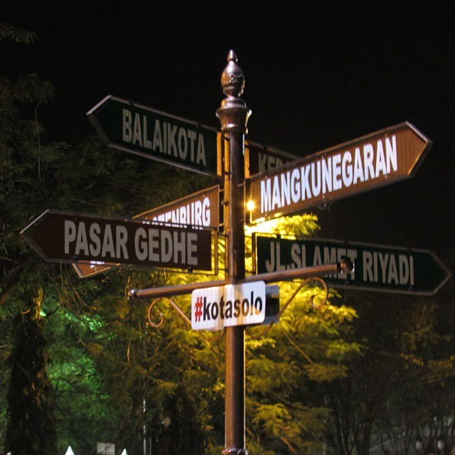

Siapa yang tidak pernah mendengar nama Solo?
Kota di Jawa Tengah yang bernama resmi Surakarta ini memang terkenal di kalangan wisatawan.
Tidak hanya memiliki latar sejarah yang kental, Solo juga mempunyai bentang alam yang cantik.
Tidak heran kalau banyak terdapat tempat wisata di Solo yang menarik untuk dikunjungi,
mulai dari wisata alam, budaya, sejarah, religi, sampai modern.
Nah, mau tau apa saja tempat wisata di Solo yang wajib dikunjungi?
Berikut daftar rekomendasi tempat wisata di Solo yang wajib masuk daftar
kunjungan saat berlibur di sana.
1.Gerojogan Sewu Tawangmangu
wisatawan adalah Grojogan Sewu Tawangmangu. Destinasi pelesiran berupa air terjun setinggi 80 meter ini berlokasi di sisi barat Gunung Lawu,
atau sekitar 37 kilometer dari pusat Kota Solo.
Air terjun ini merupakan yang tertinggi di wilayah Jawa Tengah
2.Keraton Surakarta
Di tempat wisata di Solo ini, berbagai koleksi peninggalan kasunanan disimpan
seperti misalnya gamelan, replika pusaka keraton, dan benda-benda lain yang merupakan pemberian dari raja-raja Eropa.
3.Taman Sriwedari
Taman Sriwedari telah menjadi pusat hiburan, seni, dan budaya masyarakat Solo dan sekitarnya.
4.Kampung Batik Kauman
wisatawan bisa mendapat aneka batik dengan motif dan corak yang beragam
5.Pasar Triwindu Solo
Pasar Triwindu antara lain patung batu dan kayu, uang kuno, radio lawas, senjata kuno, perabot rumah tangga,
wayang, jam dinding, cangkir, mesin ketik,
telepon tua, dan masih banyak lagi yang lainnya.
6.Pandawa Water World Solo Baru
kolam renang luas, seluncuran, aneka permainan anak, dan ombak buatan,
satu hal yang membuat objek wisata ini unik dan begitu disukai wisatawan
7.Museum Manusia Purba Sangiran
Objek wisata sejarah-edukasi ini letaknya tidak jauh dari situs fosil purbakala Sangiran,
yang sudah ditetapkan oleh UNESCO sebagai salah satu warisan dunia.
8.Kebun Binatang Taru Jurug
Tidak banyak wisatawan yang tahu kalau Solo juga mempunyai obyek wisata ramah anak berupa kebun binatang.


.png)